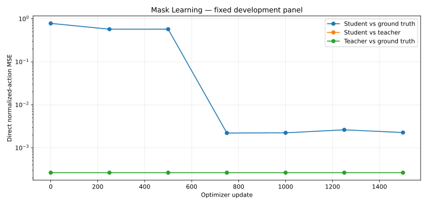
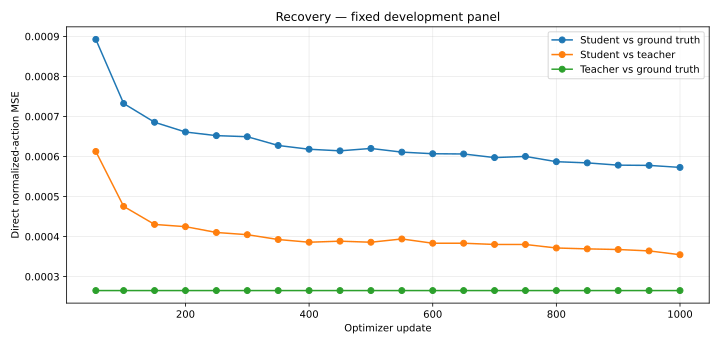

Selected mask: update 1,500. Compact video parameters: 12,468,409,664. Recovery best: 1,000; runner-up: 950.
| Update | Student vs GT | Student vs teacher | Teacher vs GT |
|---|---|---|---|
| 0 | 0.78160044 | Not recorded | 0.00026507 |
| 250 | 0.57337722 | Not recorded | 0.00026507 |
| 500 | 0.57378819 | Not recorded | 0.00026507 |
| 750 | 0.00221171 | Not recorded | 0.00026507 |
| 1000 | 0.00223606 | Not recorded | 0.00026507 |
| 1250 | 0.00262511 | Not recorded | 0.00026507 |
| 1500 | 0.00226913 | Not recorded | 0.00026507 |

| Update | Student vs GT | Student vs teacher | Teacher vs GT |
|---|---|---|---|
| 55 | 0.00089246 | 0.00061254 | 0.00026507 |
| 100 | 0.00073231 | 0.00047531 | 0.00026507 |
| 150 | 0.00068543 | 0.00043025 | 0.00026507 |
| 200 | 0.00066109 | 0.00042467 | 0.00026507 |
| 250 | 0.00065207 | 0.00041015 | 0.00026507 |
| 300 | 0.00064938 | 0.00040465 | 0.00026507 |
| 350 | 0.00062747 | 0.00039258 | 0.00026507 |
| 400 | 0.00061807 | 0.00038579 | 0.00026507 |
| 450 | 0.00061410 | 0.00038843 | 0.00026507 |
| 500 | 0.00062005 | 0.00038577 | 0.00026507 |
| 550 | 0.00061087 | 0.00039395 | 0.00026507 |
| 600 | 0.00060685 | 0.00038330 | 0.00026507 |
| 650 | 0.00060623 | 0.00038327 | 0.00026507 |
| 700 | 0.00059724 | 0.00038023 | 0.00026507 |
| 750 | 0.00060014 | 0.00038015 | 0.00026507 |
| 800 | 0.00058697 | 0.00037139 | 0.00026507 |
| 850 | 0.00058401 | 0.00036918 | 0.00026507 |
| 900 | 0.00057832 | 0.00036761 | 0.00026507 |
| 950 | 0.00057773 | 0.00036412 | 0.00026507 |
| 1000 | 0.00057265 | 0.00035456 | 0.00026507 |

Select two recovery checkpoints. Values are direct action MSE; lower is better.
versus